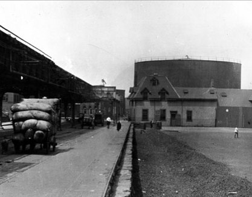
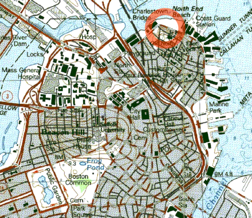
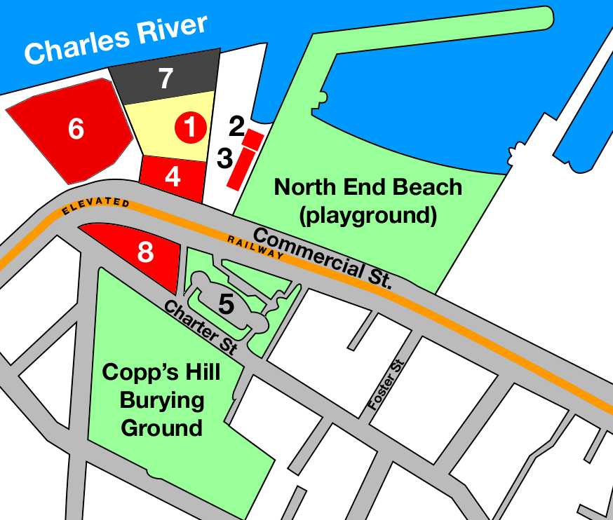
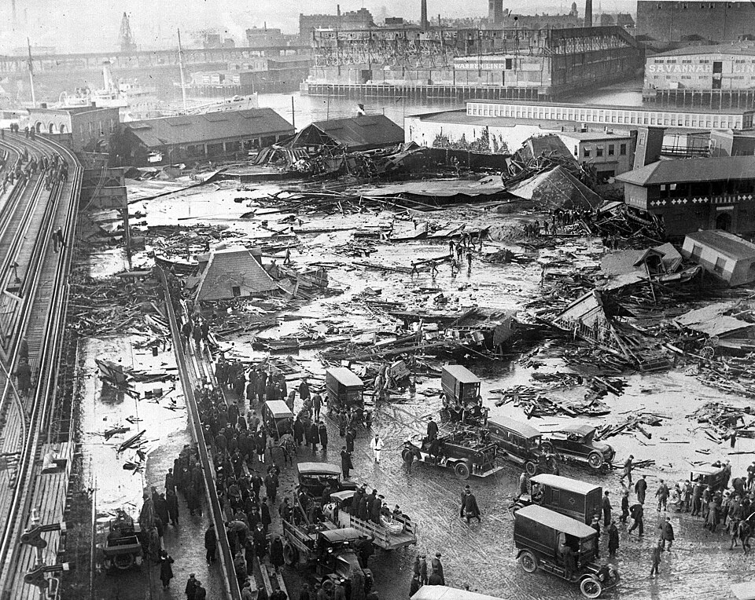
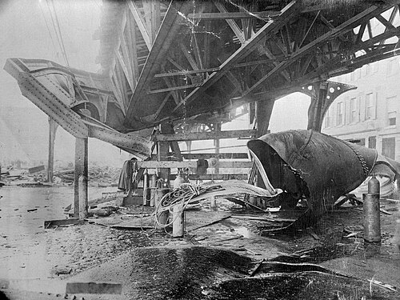
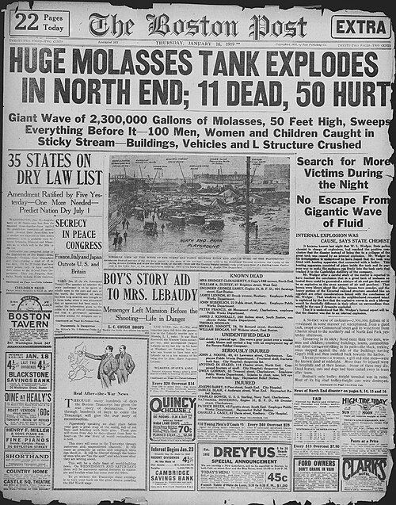
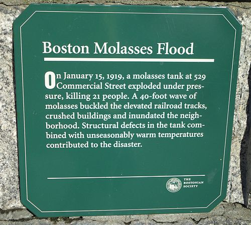

Background
Molasses can be fermented to produce ethanol, the active ingredient in alcoholic beverages and a key component in munitions. The disaster occurred in Boston's North End at the Purity Distilling Company facility at 529 Commercial Street near Keany Square.

A considerable amount of molasses had been stored there by the company, which used the Commercial Street tank, located adjacent to Boston Harbor, to offload molasses from ships and store it for later transfer by pipeline to the Purity ethanol plant situated between Willow Street and Evereteze Way in nearby Cambridge.
The molasses tank stood 50 feet (15 meters) tall and 90 feet (27 meters) in diameter, and contained as much as 2.3 million US gallons (8,700 m3).
Flood

On January 15, 1919, temperatures in Boston had risen above 40 degrees Fahrenheit (4 degrees Celsius), climbing rapidly from the frigid temperatures of the preceding days. On the previous day, a ship had delivered a fresh load of molasses, which had been warmed to decrease its viscosity for transfer.

Possibly due to the thermal expansion of the older, colder molasses already inside the tank, the tank burst open and collapsed at approximately 12:30 p.m. Witnesses reported that they felt the ground shake and heard a roar as it collapsed, a long rumble similar to the passing of an elevated train; others reported a tremendous crashing, a deep growling, "a thunderclap-like bang!", and a sound like a machine gun as the rivets shot out of the tank.

The density of molasses is about 1.4 metric tons per cubic meter (12 pounds per US gallon), 40% denser than water, resulting in the molasses having a great deal of potential energy. The collapse translated this energy into a wave of molasses 25 feet (8 meters) high at its peak, moving at 35 mph (56 km/h).

The wave was of sufficient force to drive steel panels of the burst tank against the girders of the adjacent Boston Elevated Railway's Atlantic Avenue structure and tip a streetcar momentarily off the railway's tracks. Stephen Puleo describes how nearby buildings were swept off their foundations and crushed. Several blocks were flooded to a depth of 2 to 3 feet (60 to 90 cm).

Stephen Puleo quotes a report from The Boston Post:
Molasses, waist deep, covered the street and swirled and bubbled about the wreckage [...] Here and there struggled a form—whether it was animal or human being was impossible to tell. Only an upheaval, a thrashing about in the sticky mass, showed where any life was [...] Horses died like so many flies on sticky fly-paper. The more they struggled, the deeper in the mess they were ensnared. Human beings—men and women—suffered likewise.
As molasses is a non-Newtonian fluid, its viscosity changes under stress, thinning and flowing quickly under pressure and heat. During the flood, this shear-thinning resulted in unexpected speed. A 2013 article in Scientific American stated:
"A wave of molasses does not behave like a wave of water. [...] A wave of molasses is even more devastating than a typical tsunami. In 1919 the dense wall of syrup surging from its collapsed tank initially moved fast enough to sweep people up and demolish buildings, only to settle into a more gelatinous state that kept people trapped."
The Boston Globe reported that people "were picked up by a rush of air and hurled many feet". Others had debris hurled at them from the rush of sweet-smelling air. A truck was picked up and hurled into the harbor. After the initial wave, the molasses became viscous, exacerbated by the cold temperatures, trapping those caught in the wave and making it even more difficult to rescue them.
About 150 people were injured, and 21 people and several horses were killed. Some were crushed and drowned by the molasses or by the debris that it carried within. The wounded included people, horses, and dogs; coughing fits became one of the most common ailments after the initial blast. Edwards Park wrote of one child's experience in a 1983 article for Smithsonian:
Anthony di Stasio, walking homeward with his sisters from the Michelangelo School, was picked up by the wave and carried, tumbling on its crest, almost as though he were surfing. Then he grounded and the molasses rolled him like a pebble as the wave diminished. He heard his mother call his name and couldn't answer, his throat was so clogged with the smothering goo. He passed out, then opened his eyes to find three of his four sisters staring at him.
Aftermath
First to the scene were 116 cadets under the direction of Lieutenant Commander H. J. Copeland from USS Nantucket, a training ship of the Massachusetts Nautical School (now the Massachusetts Maritime Academy) that was docked nearby at the playground pier. The cadets ran several blocks toward the accident and entered into the knee-deep flood of molasses to pull out the survivors, while others worked to keep curious onlookers from getting in the way of the rescuers.
The Boston Police, the Red Cross, and Army and Navy personnel soon arrived. Some nurses from the Red Cross dove into the molasses, while others tended to the injured, keeping them warm and feeding the exhausted workers. Many of these people worked through the night, and the injured were so numerous that doctors and surgeons set up a makeshift hospital in a nearby building. Rescuers found it difficult to make their way through the syrup to help the victims, and four days elapsed before they stopped searching; many of the dead were so glazed over in molasses that they were hard to recognize. Other victims were swept into Boston Harbor and were found three to four months after the disaster.
In the wake of the accident, 119 residents brought a class-action lawsuit against the United States Industrial Alcohol Company (USIA), which had bought Purity Distilling in 1917. It was one of the first class-action suits in Massachusetts and is considered a milestone in the development of modern corporate regulation.
The company claimed that the tank had been blown up by anarchists because some of the alcohol produced was to be used in making munitions, but a court-appointed auditor, Hugh W. Ogden, found USIA responsible after three years of hearings, and the company ultimately paid out $628,000 in damages. Relatives of those killed reportedly received around $7,000 per victim.
Cleanup
Cleanup crews used salt water from a fireboat to wash away the molasses and sand to absorb it, and the harbor was brown with molasses until summer. The cleanup in the immediate area took weeks, with several hundred people contributing to the effort, and it took longer to clean the rest of Greater Boston and its suburbs.
Rescue workers, cleanup crews, and sight-seers had tracked molasses through the streets and spread it to subway platforms, to the seats inside trains and streetcars, to pay telephone handsets, into homes, and to countless other places. It was reported that "Everything that a Bostonian touched was sticky."
Fatalities
The disaster resulted in 21 deaths. Below is the complete list of victims recorded from the event:
| Name | Age | Occupation |
|---|---|---|
| Patrick Breen | 44 | Laborer (North End Paving Yard) |
| William Brogan | 61 | Teamster |
| John Callahan | 43 | Paver (North End Paving Yard) |
| Bridget Clougherty | 65 | Homemaker |
| Stephen Clougherty | 34 | Unemployed |
| Maria Di Stasio | 10 | Child |
| William Duffy | 58 | Laborer (North End Paving Yard) |
| Peter Francis | 64 | Blacksmith (North End Paving Yard) |
| Flaminio Gallerani | 37 | Driver |
| Pasquale Iantosca | 10 | Child |
| James J. Kenneally | 48 | Laborer (North End Paving Yard) |
| Eric Laird | 17 | Teamster |
| George Layhe | 38 | Firefighter (Engine 31) |
| James Lennon | 64 | Teamster/Motorman |
| Ralph Martin | 21 | Driver |
| James McMullen | 46 | Foreman, Bay State Express |
| Cesar Nicolo | 32 | Expressman |
| Thomas Noonan | 43 | Longshoreman |
| John M. Seiberlich | 69 | Blacksmith (North End Paving Yard) |
| Peter Shaughnessy | 18 | Teamster |
| Michael Sinnott | 78 | Messenger |
Causes
Several factors might have contributed to the disaster. The first factor is that the tank may have leaked from the very first day that it was filled in 1915. The tank was also poorly constructed and insufficiently tested, and carbon dioxide production may have raised the internal pressure due to fermentation in the tank. Warmer weather the previous day would have assisted in building this pressure, as the air temperature rose from 2 to 41 °F (−17 to 5.0 °C) over that period. The failure occurred from a manhole cover near the base of the tank, and a fatigue crack there possibly grew to the point of criticality.
The tank had been filled to capacity only eight times since it was built a few years previously, putting the walls under an intermittent, cyclical load. Several authors say that the Purity Distilling Company was trying to out-race Prohibition, as the Eighteenth Amendment was ratified the next day (January 16, 1919) and took effect one year later.
An inquiry after the disaster revealed that Arthur Jell, USIA's treasurer, neglected basic safety tests while overseeing construction of the tank, such as filling it with water insufficient to check for leaks, and ignored warning signs such as groaning noises each time the tank was filled. He had no architectural or engineering experience. When filled with molasses, the tank leaked so badly that it was painted brown to hide the leakage. Local residents collected leaked molasses for their homes.
A 2014 investigation applied modern engineering analysis and found that the steel was half as thick as it should have been for a tank of its size even with the lower standards of the time. Another issue was that the steel lacked manganese, and was more brittle as a result. The tank's rivets were also apparently flawed, and cracks first formed at the rivet holes.
In 2016, a team of scientists and students at Harvard University conducted extensive studies of the disaster, gathering data from many sources, including 1919 newspaper articles, old maps, and weather reports. The student researchers also studied the behavior of cold corn syrup flooding a scale model of the affected neighborhood. The researchers concluded that the reports of the high speed of the flood were credible.
Two days before the disaster, warmer molasses had been added to the tank, reducing the viscosity of the fluid. When the tank collapsed, the fluid cooled quickly as it spread, until it reached Boston's winter evening temperatures and the viscosity increased dramatically. The Harvard study concluded that the molasses cooled and thickened quickly as it rushed through the streets, hampering efforts to free victims before they suffocated.
Area Today

USIA did not rebuild the tank. The property formerly occupied by the molasses tank and the North End Paving Company became a yard for the Boston Elevated Railway (predecessor to the Massachusetts Bay Transportation Authority). It is now the site of a city-owned recreational complex, officially named Langone Park, featuring a Little League Baseball field, a playground, and bocce courts. Immediately to the east is the larger Puopolo Park, with additional recreational facilities.
A small plaque at the entrance to Puopolo Park, placed by The Bostonian Society, commemorates the disaster. The plaque, titled "Boston Molasses Flood", reads:
On January 15, 1919, a molasses tank at 529 Commercial Street exploded under pressure, killing 21 people. A 40-foot wave of molasses buckled the elevated railroad tracks, crushed buildings and inundated the neighborhood. Structural defects in the tank combined with unseasonably warm temperatures contributed to the disaster.
The accident has since become a staple of local culture, not only for the damage the flood brought, but also for the sweet smell that filled the North End for decades after the disaster. According to journalist Edwards Park, "The smell of molasses remained for decades a distinctive, unmistakable atmosphere of Boston."
On January 15, 2019, for the 100th anniversary of the event, a ceremony was held in remembrance. Ground-penetrating radar was used to identify the exact location of the tank from 1919. The concrete slab base for the tank remains in place approximately 20 inches (51 cm) below the surface of the baseball diamond at Langone Park. Attendees of the ceremony stood in a circle marking the edge of the tank. The 21 names of those who died in, or as a result of, the flood were read aloud.
Many laws and regulations governing construction were changed as a direct result of the disaster, including requirements for oversight by a licensed architect and civil engineer.
In Popular Culture
- The Darkest of the Hillside Thickets' song "Great Molasses Disaster" is about the flood, and their official music video includes many pictures of the aftermath.
- Canadian metal band Protest the Hero's song "All Hands" from the album Palimpsest is written from the perspective of a victim of the flood. The piano interlude to the song is titled "Harborside", a reference to the harborside tanks in which the molasses was stored. The last lines of the song reference the first hand accounts of the aftermath.
- The I Survived children's book series by Lauren Tarshis includes I Survived The Great Molasses Flood, 1919, a story written from the perspective of a 12 year-old girl in Boston. A graphic novel version has also been published.
- Bostonian comedian and actress Ayo Edebiri, on Late Night with Seth Meyers, passionately spoke about the Great Molasses Flood where she mentions that she was "reduced to tears" talking about the tragedy, where people outside of Boston are far less aware of the event.
- In 2025, a designer card game about the event was announced—"Molassacre: Escape the Flood" was based on the mid-20th century game Mille Bornes.
See Also
- List of disasters in Massachusetts by death toll
- List of non-water floods
- Honolulu molasses spill
Notes
- The flood has more recently been known as the "Boston Molassacre".
- With a density of 1.4 kg/L (12 lb/US gal), 8,700 m3 (310,000 cu ft) of molasses weighs 12,180 tonnes (11,990 long tons; 13,430 short tons).
References
- Hinrichsen, Erik (September 8, 2010). "The Boston Molasses Disaster: Causes of the Molasses Tank Explosion". Bright Hub. Retrieved March 5, 2019.
- "'Molasses Disaster' Featured at Evening at 74". Beacon Hill Times. Retrieved March 5, 2019.
- Kelly, Kate (January 8, 2012). "The 'Boston Molassacre'". America Comes Alive. Retrieved October 3, 2021.
- "Great Molasses Flood: US marks 100 years since deadly wave of treacle trashed part of Boston". South China Morning Post. Associated Press. January 14, 2019. Retrieved March 18, 2019.
- Sohn, Emily (January 15, 2019). "Why the Great Molasses Flood Was So Deadly". The History Channel. A&E Television Networks. Retrieved January 16, 2019.
- Park, Edwards (November 1983). "Without Warning, Molasses in January Surged Over Boston". Smithsonian. 14 (8): 213–230. Retrieved March 24, 2013.
- Puleo, Stephen (2004). Dark Tide: The Great Boston Molasses Flood of 1919. Beacon Press. ISBN 0-8070-5021-0.
- "100 Years Later: Lessons From Boston's Molasses Flood Of 1919". www.wbur.org. January 15, 2019.
- Kesslen, Ben (January 14, 2019). "The Great Boston Molasses Flood of 1919 killed 21 after 2 million gallon tank erupted". NBC News. Retrieved January 14, 2019.
- Jabr, Ferris (July 17, 2013). "The Science of the Great Molasses Flood". Scientific American. Retrieved October 16, 2013.
- Park, Edwards (December 19, 2018). "Without Warning, Molasses in January Surged Over Boston". edp.org. Retrieved March 24, 2019.
- Jabr, Ferris (August 1, 2013). "The Science of the Great Molasses Flood". Scientific American. Retrieved August 7, 2025.
- Buell, Spencer (January 12, 2019). "Anarchists, Horses, Heroes: 12 Things You Didn't Know about the Great Boston Molasses Flood". Boston Magazine. Retrieved January 14, 2019.
- "12 Killed When Tank of Molasses Explodes" (PDF). The New York Times (published January 16, 1919). January 15, 1919. ISSN 0362-4331. Retrieved May 30, 2008.
- Andrews, Evan (May 16, 2023). "The Great Molasses Flood of 1919". HISTORY. Retrieved December 1, 2023.
- Betancourt, Sarah (January 13, 2019). "The Great Boston Molasses Flood: why the strange disaster matters today". The Guardian. ISSN 0261-3077. Retrieved January 14, 2019.
- Federal Reserve Bank of Minneapolis. "Consumer Price Index (estimate) 1800–". Retrieved February 29, 2024.
- "The Great Boston Molasses Disaster of 1919". The Hour. United Press International. January 17, 1979.
- Andrews, Evan (January 13, 2017). "The Great Molasses Flood of 1919". The History Channel. A&E Television Networks. Retrieved December 21, 2017.
- Mason, John (January 1965). "The Molasses Disaster of January 15, 1919". Yankee. Retrieved March 21, 2005.
- Dwyer, Dialynn (January 13, 2019). "'There was no escape from the wave': These are the 21 victims of the Great Boston Molasses Flood". Boston.com. Retrieved January 14, 2019.
- Barry, Quan (September 26, 2004). Controvertibles. University of Pittsburgh Press. ISBN 978-0-8229-8015-5.
- Birnbaum, Amy. (2019). The Great Molasses Flood: A bizarre disaster struck one of America's biggest cities 100 years ago. Scholastic News, 81(11), 4.
- Puleo, Stephen (2010). Dark Tide: The Great Boston Molasses Flood of 1919. Beacon Press. p. 79. ISBN 9780807096673.
- Stanley, Robert (1989). "Footnote to History". Yankee. 53: 101.
- Silverman, Steve (2001). Einstein's Refrigerator: And Other Stories from the Flip Side of History. Andrews McMeel. p. 37. ISBN 978-0-7407-1419-1.
- Streissguth, Thomas (2009). The Roaring Twenties. Infobase. p. 13. ISBN 978-1-4381-0887-2.
- Adams, Cecil (December 31, 2004). "Was Boston once literally flooded with molasses?". The Straight Dope. The Chicago Reader. Retrieved December 16, 2006.
- Mayville, Ronald (August 31, 2014). "The Great Boston Molasses Tank Failure of 1919". Zweig List.
- Schworm, Peter (January 15, 2015). "Nearly a century later, new insight into cause of Great Molasses Flood of 1919". The Boston Globe. Retrieved January 16, 2015.
- "Slow as molasses? Sweet but deadly 1919 disaster explained". Boston.com. Associated Press. November 24, 2016. Retrieved December 3, 2016.
- Mccann, Erin (November 26, 2016). "Solving a Mystery Behind the Deadly 'Tsunami of Molasses' of 1919". The New York Times. Retrieved December 3, 2016.
- "Molasses Creates a Sticky Situation". AlphaGalileo. November 17, 2016. Retrieved November 25, 2016.
- Sharp, Nicole; Kennedy, Jordan; Rubinstein, Shmuel (November 21, 2016). "Abstract: L27.00008 : In a sea of sticky molasses: The physics of the Boston Molasses Flood". Bulletin of the American Physical Society. 61 (20). Retrieved November 25, 2016.
- Harris, Patricia; Lyon, David (2004). Boston: a Guide to Unique Places. The Globe Pequot Press. pp. 63–64. ISBN 0-7627-3011-0.
- "Places to go: Downtown/North End". The Boston Harbor Association. Retrieved September 5, 2013.
- Ocker, J. W. (2010). The New England Grimpendium. Woodstock, VT: The Countryman Press. p. 97. ISBN 978-0-88150-919-9.
- Steinberg, John M. (January 14, 2019). "Results of Geophysical survey at Langone Park: 100 Years since the Great Molasses Flood". The Fiske Center Blog. UMass Boston. Retrieved October 16, 2023.
- Sweeney, Emily (January 15, 2019). "Boston officials remember the Great Molasses Flood, 100 years later". The Boston Globe. Retrieved January 26, 2019.
- adamg (January 15, 2019). "Gathering around the site of the molasses tank to remember its victims". Boston, Massachusetts. Retrieved January 26, 2019.
- Durso, Fred (May 1, 2011). "The Great Boston Molasses Flood". NFPA Journal. Retrieved March 19, 2019.
- "Great Molasses Disaster by The Darkest of the Hillside Thickets". YouTube. January 18, 2017.
- "Protest the Hero – All Hands". genius.com.
- "#19: I Survived The Great Molasses Flood, 1919 | Lauren Tarshis". www.laurentarshis.com. Retrieved February 2, 2026.
- "I Survived The Great Molasses Flood, 1919 Graphic Novel (I Survived Graphic Novel #11) | Lauren Tarshis". www.laurentarshis.com. Retrieved September 18, 2026.
- "Ayo Edebiri's Dad Refused to Let Martin Scorsese Film in Their House for The Departed". YouTube. June 18, 2024.
- Thornton, Claire (June 27, 2025). "N.J. man creates card game about deadly Molasses Flood of 1919. Its name is making historians uneasy". The Boston Globe. Retrieved June 27, 2025.
Further Reading
- Puleo, Stephen (2004). Dark Tide: The Great Boston Molasses Flood of 1919. Boston: Beacon Press. ISBN 0-8070-5021-0.
External Links
- Boston Public Library. Photos related to the event on Flickr.
- The Great Boston Molasses Flood of 1919, four-minute audio story at The American Storyteller Radio Journal.
- Interview with Stephen Puleo, author of Dark Tide: The Great Boston Molasses Flood of 1919.
- Molasses Flood of 1919.
- "Scenes in the Molasses-Flooded Streets of Boston", from the Washington Times, January 18, 1919.
- 100 years ago, Boston's North End was hit by a deadly wave of molasses (photo collection).
- The Great Molasses Flood of 1919 was Boston's strangest disaster (historical summary with photos).
- City marks 100th anniversary of Great Molasses Flood (video broadcast from WCVB-TV).